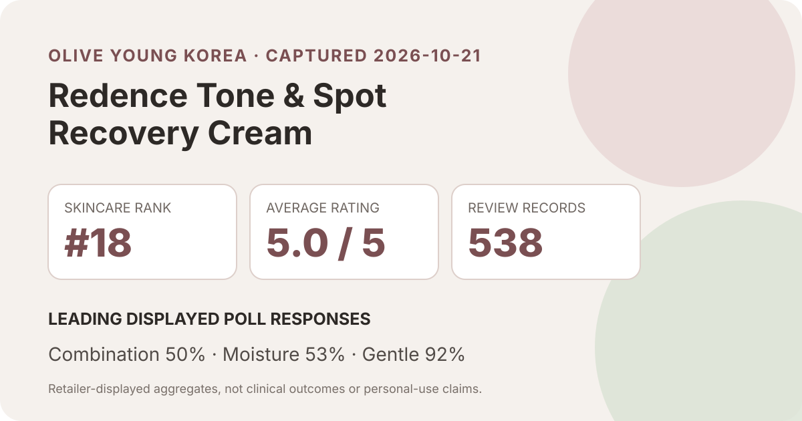
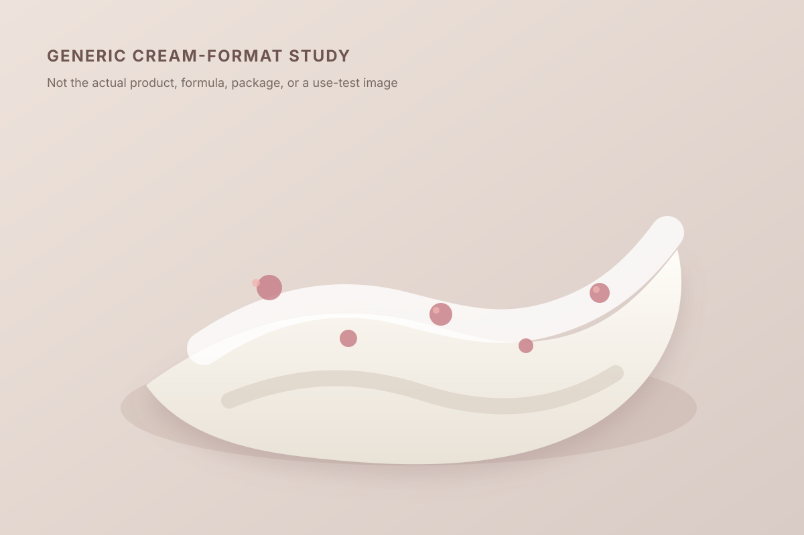

Data captured October 21, 2026. This analysis uses only Olive Young Korea's displayed aggregate rating, exposed star-share rows, anonymous shopper polls, and retailer-level automated theme summary. It does not reproduce or translate individual review text, names, or photos.

The short version: The listing showed 5.0 out of 5 from 538 review records. The statistics response exposed a 99% five-star share, while combination skin, moisture concern, and the gentle response led their respective shopper polls. The record is positive but still limited to a retailer interface.
The visible average was 5.0 stars. The product header displayed 538 review records, and the official statistics response repeated the same count and average. That agreement matters because it avoids combining a current headline score with a different total from a neighboring product, an older page snapshot, or a different Redence item.
The statistics response exposed these rounded rating rows:
The five-star row is the dominant storefront satisfaction signal. The exposed rows total 99%, and the response omitted a one-star row rather than displaying one. I do not turn that omission into an assumed value. Whole-number shares can also hide small counts, so 99% should be read as a rounded interface output instead of an exact reconstruction of all 538 selections.
A high aggregate can help readers identify a product receiving favorable retail feedback, but it is not a controlled comparison. The interface does not standardize duration of use, application amount, climate, routine, or starting skin condition. It cannot establish whether the current formula or the exact 80 ml configuration was used in every linked record.
The skin-type poll showed 50% combination, 43% dry, and 7% oily. These displayed shares total 100%. Combination skin is the largest self-reported group, but dry skin is close enough that the sample is not dominated by a single skin-type label.
This distribution describes who selected each response, not who achieved a measured benefit. Self-reported skin type can shift with season, climate, cleansing, medication, other products, or the respondent's own definition. The poll does not reveal whether the cream was the only routine change. It therefore cannot establish that the product performs better for combination or dry skin.
The concern poll displayed 53% moisture, 37% wrinkle or brightening concern, and 10% soothing. These broad questionnaire labels indicate which concern respondents chose. They are not measurements of water content, transepidermal water loss, wrinkles, pigmentation, redness, or inflammation.
The retailer title foregrounds dark-spot and brightening language. This article treats that wording as listing identification, not as an independently verified outcome. The captured interface did not provide a clinical protocol, comparator, sample, numerical pigmentation endpoint, duration, or complete applicability limits. The 37% concern response shows interest in that category; it does not prove that tone or spots changed.
The irritation poll showed 92% gentle, 7% ordinary, and 1% felt irritation. The gentle response is the clear leader, but it remains a rounded, self-reported storefront signal. It is not a supervised tolerance test and does not rule out stinging, breakouts, allergy, eye-area discomfort, or incompatibility with another routine step.
The visible 1% irritation response is also relevant. Even a small displayed share means the aggregate should not be converted into “irritation-free.” Individual response can depend on the current regional formula, frequency, application area, damaged skin, concurrent products, and personal history. Current directions and precautions should come from the package and advice appropriate to the individual's circumstances.
Olive Young's automated recent-review summary labeled 90% of its analyzed subset as positive. It grouped discussion into broad themes around smoother-feeling or more even-looking texture, moisture and glow impressions, and mild-feeling tone-care impressions. Those clusters are navigation cues generated from a retailer-defined recent subset, not findings from all 538 records.
This article does not reproduce or translate the underlying sentences. It also does not convert the themes into product facts: a texture theme does not establish objective surface change, a glow theme does not measure hydration, and a mild-feeling theme does not guarantee tolerance. The 90% label is not interchangeable with the overall 5.0 average or a buyer-wide success rate.

The retailer places this item in the cream category. In general format terms, a cream is a leave-on emulsion designed to spread as a continuous layer and is often richer than a toner or thin serum. That category description does not reveal this product's exact viscosity, slip, scent, absorption speed, residue, finish, or behavior under sunscreen and makeup.
I did not handle or apply this product. The illustration above is deliberately generic and does not reconstruct the actual color, internal beads, or texture. It should not be read as an ingredient diagram. Anyone considering the cream should verify the current ingredient list, directions, and precautions on the regional package rather than infer them from the title, visual, or crowd rating.
At capture, the Korean listing showed a ₩32,900 reference price and a ₩21,900 promotional price for 80 ml. It was also marked temporarily sold out. That status does not invalidate the review aggregate, but it makes the captured offer a dated snapshot rather than a purchasing recommendation.
Prices, coupons, gifts, stock, sellers, and configurations can change quickly. Before comparing value, verify the current quantity, checkout total, return terms, and whether the same formula and package remain available. Review records may also span earlier prices or package presentations rather than only the offer visible on October 21.
The defensible reading is narrow: this was the first distinct unpublished product after 17 higher-ranked listings were excluded for existing coverage; its 538-record profile leaned strongly toward the exposed five-star row; combination skin narrowly led the skin-type poll; moisture led the concern responses; and the gentle answer led the irritation poll. The current page also held position 18 in the skincare sales ranking at capture.
Those signals make the listing relevant for readers comparing cream formats and current Korean retail activity. They do not justify calling it a proven pigmentation treatment, an objectively smoothing product, universally gentle, or a certain match for combination skin. A sound next step is to check the current label and regional formula, consider personal tolerance history, and seek qualified guidance when a medical skin concern is involved.
Combination skin was the largest displayed skin-type response at 50%, followed by dry skin at 43% and oily skin at 7%. That describes poll representation, not proven suitability or a guaranteed result.
The retail title uses tone-and-spot and brightening language, while 37% selected the wrinkle or brightening concern label. Neither signal is a clinical measurement or proof that the cream changes pigmentation.
The captured irritation poll showed 92% gentle, 7% ordinary, and 1% felt irritation. These rounded self-reported shares cannot predict individual tolerance.
The listing identifies a cream format. This analysis did not apply the product and does not claim a specific viscosity, scent, absorption speed, finish, capsule behavior, or layering result.
It is a rounded retail satisfaction signal across 538 linked records. It is not a clinical trial, proof of efficacy, or a prediction for one person's skin.
Source: Olive Young Korea product page, captured October 21, 2026. Product title, ranking, price, availability, rating, review count, exposed star rows, poll values, and automated summary can change.
Published by The K-Beauty Data Desk. The source does not independently verify every buyer's identity, and this page is an editorial analysis of retailer-displayed aggregates—not medical advice or a substitute for the current product label.
← All reviews · Review-volume rankings · Skin-poll explorer · Methodology